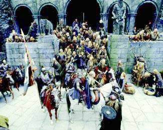

Estrena 18 de desembre de 2002
«- Fitxa tècnica - Cinemes - Entrevista - comentari 2 -»
| L'univers
de Tolkien torna als cinemes • L'esperada 'El senyor dels anells: Les dues torres' s'estrena a tot el món Elfs, nans, orcs, hòbbits i Peter Jackson, el mag neozelandès que l'any passat va fer història portant a la pantalla El senyor dels anells, l'èpica més llarga que mai s'hagi explicat, continuen el seu viatge de fantasia i aventura pels perillosos camins de la Terra Mitjana. |

|
|
Va ser a mitjans dels anys 90, en una terra llunyana dels antípodes,
quan Peter Jackson, un apassionat cineasta de petita estatura, peus
descalços, barba arrissada i cabells embullats, es va entestar a portar
a terme el més difícil encara: plasmar en imatges la torrencial història
imaginada per J. R. R. Tolkien fa més de mig segle. Un
any i mig de rodatge, 2.400 treballadors, entre actors i tècnics, 26.000
extres i la tecnologia més sofisticada, desenvolupada especialment per
a aquest projecte, es van destinar a la creació d'una cosa fora de sèrie,
una genuïna fantasia èpica. L'objectiu de Jackson era entusiasmar joves que no havien sentit parlar mai dels hòbbits, fascinar els adults que anaven al cine pensant-se que la Terra Mitjana era cosa de hippies o un lloc ple de cavallers i dracs, i convèncer els fans de la trilogia que l'obra de Tolkien es podia traduir en imatges sense perdre màgia ni vigència. Una tasca difícil i plena d'obstacles que va culminar amb l'entusiasta acollida de la primera entrega per part del públic i la crítica. Més de 860 milions d'euros (143.000 milions de pessetes) recaptats a les taquilles de tot el món --gairebé quatre vegades el cost de la producció de les tres pel.lícules-- i 13 candidatures a l'Oscar --va guanyar quatre estatuetes-- en van ser el resultat. Però això només va ser el principi. Ara arriba el més difícil, no decebre els milions d'espectadors que esperen amb impaciència seguir les tribulacions dels hòbbits en el seu objectiu de salvar la Terra Mitjana de la destrucció. Les dues torres comença just on va acabar La Comunitat de l'Anell. Una vegada més, el públic s'endinsarà en un mític regne de boscos mil.lenaris, altes muntanyes, gèlids llacs, vastes planes i violents volcans, habitat per homes, elfs, nans, orcs i hòbbits que, igual que Jackson, s'estimen més caminar descalços. DOS GRUPS En el cor de la història hi ha Frodo, un hòbbit que ha de tornar l'anell a les fosques terres on va ser forjat i desfer-se'n. Fallar en aquesta empresa significa el final de la Terra Mitjana. A Les dues torres, Frodo i els seus vuits companys es veuen forçats a separar-se en tres grups. La pel.lícula seguirà, paral.lelament, els avatars de cada un d'ells en la seva lluita per combatre les forces del mal i vèncer Lord Sauron. Per Elijah Wood, que dóna vida a Frodo, Les dues torres és la més complicada i fosca de les tres pel.lícules. "Com en totes les trilogies, la segona part és sempre complicada, perquè ets a la meitat de la història. El llibre ja és per si mateix bastant difícil de portar a la pantalla. I malgrat això, aquesta és la meva preferida, perquè s'hi concentra tota l'acció", assenyala l'actor. Elijah Wood subratlla que l'essència de la història, "el fosc relat sobre el genocidi de l'última raça humana", és un clar reflex del que està passant en el nostre temps. "Espero --comenta l'intèrpret del film-- que la gent que vegi la pel.lícula sortirà del cinema entusiasmada i amb el ferm propòsit de lluitar per allò en què creu i convençuda de la importància de protegir i salvar la naturalesa de la imminent destrucció que l'amenaça". |
|